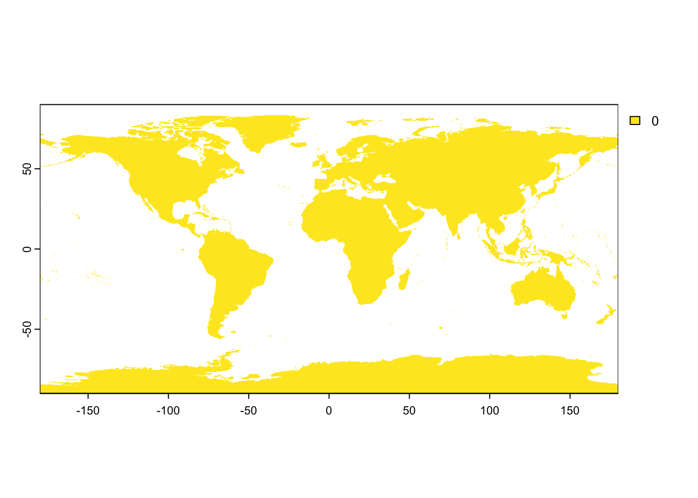
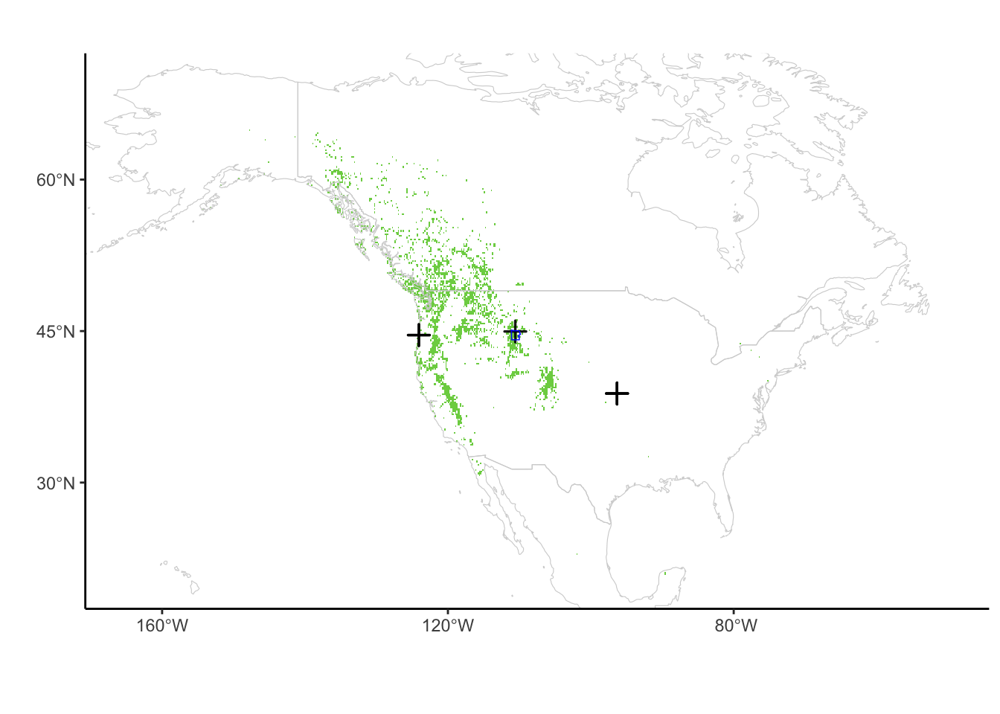
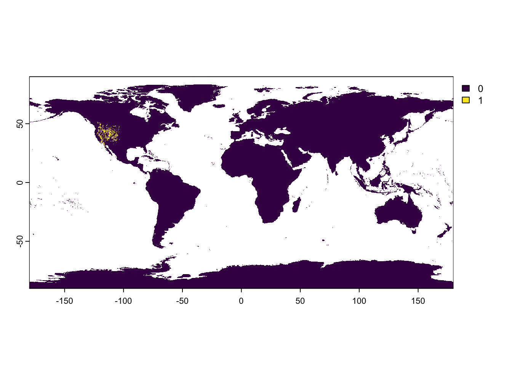
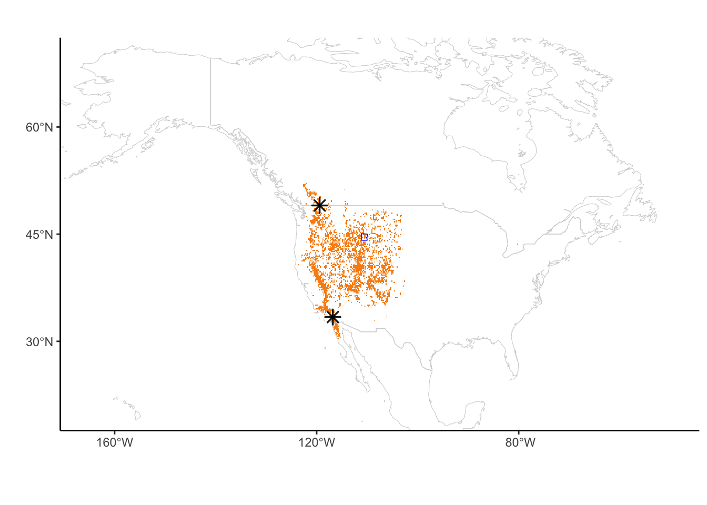

## First check for the required packages, install if needed, and load the libraries.
if (!requireNamespace("BiocManager", quietly = TRUE))
install.packages("BiocManager")
BiocManager::install("sangerseqR")
remotes::install_github("ropensci/bold")
remotes::install_github("ropensci/taxize")
if (!require("pacman")) install.packages("pacman")
pacman::p_load(maps, ggplot2, dplyr, countrycode, rgbif, data.table, raster, mapproj, sf, terra, raster)Continent-scale barcode coverage of lodgepole pine and big sagebrush
This notebook will pull specimen records for two selected examples to highlight the effect of local sampling on global coverage.
NOTE: Make sure GDAL is installed on the system you are running the notebooks from. This may require setting the “PROJ_LIB” and “GDAL_HOME” environment variables for your system.
Figure 2A-B. Get species keys for maps of Pinus contorta and Artemisia tridentata occurrences.
# Using t.mean raster layer created above with worldclim: Change t.mean so that all cells have zero values
t.mean.files <- list.files("../data/wc2.1_10m_tavg/", ".tif", full.names=TRUE)
t.mean.files <- list.files("../data/wc2.1_10m_tavg/", ".tif", full.names=TRUE)
t.mean <- terra::rast(t.mean.files)
t.mean <- terra::app(t.mean, fun = mean, na.rm = TRUE)
t.mean.addvalues <- t.mean
t.mean.addvalues[!is.na(terra::values(t.mean.addvalues))] <- 0
terra::plot(t.mean.addvalues)
str(t.mean.addvalues)S4 class 'SpatRaster' [package "terra"]#terra::plot(t.mean.addvalues)
t.mean.addvaluesclass : SpatRaster
dimensions : 1080, 2160, 1 (nrow, ncol, nlyr)
resolution : 0.1666667, 0.1666667 (x, y)
extent : -180, 180, -90, 90 (xmin, xmax, ymin, ymax)
coord. ref. : lon/lat WGS 84 (EPSG:4326)
source(s) : memory
name : mean
min value : 0
max value : 0 t.mean.addvalues_extent_use <- terra::ext(t.mean.addvalues)# Get taxon keys from GBIF
key_artemisia_tridentata <- name_suggest(q='Artemisia tridentata', rank='species')
key_artemisia_tridentataRecords returned [2]
No. unique hierarchies [0]
Args [q=Artemisia tridentata, limit=100, rank=species, fields1=key,
fields2=canonicalName, fields3=rank]
# A tibble: 2 × 3
key canonicalName rank
<int> <chr> <chr>
1 9396703 Artemisia tridentata SPECIES
2 3121335 Artemisia tridentata SPECIESkey_pinus_contorta <- name_suggest(q='Pinus contorta', rank='species')
key_pinus_contortaRecords returned [4]
No. unique hierarchies [0]
Args [q=Pinus contorta, limit=100, rank=species, fields1=key,
fields2=canonicalName, fields3=rank]
# A tibble: 4 × 3
key canonicalName rank
<int> <chr> <chr>
1 5285750 Pinus contorta SPECIES
2 8405446 Pinus contorta SPECIES
3 7617264 Pinus contorta SPECIES
4 3908060 Lupinus pinus-contortae SPECIESFigure 2A: Map of Pinus contorta GBIF records
# Use occ_search() to query gbif records
PINCON_occurrences_2 <- occ_search(taxonKey = 5285750, limit = 50000) # number found: 41,033
head(PINCON_occurrences_2, 2)$meta
$meta$offset
[1] 41100
$meta$limit
[1] 136
$meta$endOfRecords
[1] FALSE
$meta$count
[1] 41237
$hierarchy
$hierarchy[[1]]
name key rank
1 Plantae 6 kingdom
2 Tracheophyta 7707728 phylum
3 Pinopsida 194 class
4 Pinales 640 order
5 Pinaceae 3925 family
6 Pinus 2684241 genus
7 Pinus contorta 5285750 species# Count matches: 15336
PINCON_occurrences_2_df <- data.frame(PINCON_occurrences_2$data) # Obtain coordinate data and project to desired CRS
PinusSP <- data.frame(x_coords = PINCON_occurrences_2_df$decimalLongitude, y_coords = PINCON_occurrences_2_df$decimalLatitude)
head(PinusSP, 2) x_coords y_coords
1 -112.8809 42.76652
2 -123.9814 49.15059PinusSP <- terra::vect(PinusSP, geom=c("x_coords", "y_coords"), crs="epsg:4326") # WGS84
head(PinusSP, 2)data frame with 0 columns and 0 rows# Check objects for plotting
head(t.mean.addvalues, 2) mean
1 NA
2 NAPinusSP_raster <- t.mean.addvalues
# Extract cell numbers where coordinates match
matching_cells <- terra::cellFromXY(PinusSP_raster, terra::crds(PinusSP))
# Set the values in PinusSP_raster to 1 where coordinates match
PinusSP_raster[matching_cells] <- 1
head(PinusSP_raster, 2) mean
1 1
2 NAterra::plot(PinusSP_raster)PinusSP_raster_dfpoints <- terra::as.points(PinusSP_raster)
# Convert to data frame
PinusSP_raster_df <- as.data.frame(PinusSP_raster_dfpoints, geom="XY")
head(PinusSP_raster_df, 2) mean x y
1 1 -179.91667 89.91667
2 0 -38.91667 83.58333# Plot using ggplot
PinusSP_raster_df <- PinusSP_raster_df[PinusSP_raster_df$mean > 0, ]
#PinusSP_raster_df
# ggplot wrapper for world map
world_map <- map_data("world") #ggplot wrapper of map()
north_america_map <- subset(world_map, region == "Mexico" | region == "Canada" | region == "USA")
head(north_america_map, 2) long lat group order region subregion
14759 -59.78760 43.93960 245 14759 Canada Sable Island
14760 -59.92227 43.90391 245 14760 Canada Sable Island#Yellowstone outline
aoi_boundary_YNP <- sf::st_read("../data/YellowstonePark/YellowstonePark1995.shp")Reading layer `YellowstonePark1995' from data source
`/Users/tdivoll/Projects/Kartzinel/MolEco-MEC-24-1288/data/YellowstonePark/YellowstonePark1995.shp'
using driver `ESRI Shapefile'
Simple feature collection with 1 feature and 4 fields
Geometry type: POLYGON
Dimension: XY
Bounding box: xmin: 469695.4 ymin: -12706.41 xmax: 573531.9 ymax: 96658.52
Projected CRS: NAD83 / Montanaaoi_boundary_YNP #examine featuresSimple feature collection with 1 feature and 4 fields
Geometry type: POLYGON
Dimension: XY
Bounding box: xmin: 469695.4 ymin: -12706.41 xmax: 573531.9 ymax: 96658.52
Projected CRS: NAD83 / Montana
AREA PERIMETER AB67_ AB67_ID geometry
1 8842796032 447129.5 2 649 POLYGON ((559728.7 88811.52...st_crs(aoi_boundary_YNP) #check coordinate system Coordinate Reference System:
User input: NAD83 / Montana
wkt:
PROJCRS["NAD83 / Montana",
BASEGEOGCRS["NAD83",
DATUM["North American Datum 1983",
ELLIPSOID["GRS 1980",6378137,298.257222101,
LENGTHUNIT["metre",1]]],
PRIMEM["Greenwich",0,
ANGLEUNIT["degree",0.0174532925199433]],
ID["EPSG",4269]],
CONVERSION["SPCS83 Montana zone (meter)",
METHOD["Lambert Conic Conformal (2SP)",
ID["EPSG",9802]],
PARAMETER["Latitude of false origin",44.25,
ANGLEUNIT["degree",0.0174532925199433],
ID["EPSG",8821]],
PARAMETER["Longitude of false origin",-109.5,
ANGLEUNIT["degree",0.0174532925199433],
ID["EPSG",8822]],
PARAMETER["Latitude of 1st standard parallel",49,
ANGLEUNIT["degree",0.0174532925199433],
ID["EPSG",8823]],
PARAMETER["Latitude of 2nd standard parallel",45,
ANGLEUNIT["degree",0.0174532925199433],
ID["EPSG",8824]],
PARAMETER["Easting at false origin",600000,
LENGTHUNIT["metre",1],
ID["EPSG",8826]],
PARAMETER["Northing at false origin",0,
LENGTHUNIT["metre",1],
ID["EPSG",8827]]],
CS[Cartesian,2],
AXIS["easting (X)",east,
ORDER[1],
LENGTHUNIT["metre",1]],
AXIS["northing (Y)",north,
ORDER[2],
LENGTHUNIT["metre",1]],
USAGE[
SCOPE["Engineering survey, topographic mapping."],
AREA["United States (USA) - Montana - counties of Beaverhead; Big Horn; Blaine; Broadwater; Carbon; Carter; Cascade; Chouteau; Custer; Daniels; Dawson; Deer Lodge; Fallon; Fergus; Flathead; Gallatin; Garfield; Glacier; Golden Valley; Granite; Hill; Jefferson; Judith Basin; Lake; Lewis and Clark; Liberty; Lincoln; Madison; McCone; Meagher; Mineral; Missoula; Musselshell; Park; Petroleum; Phillips; Pondera; Powder River; Powell; Prairie; Ravalli; Richland; Roosevelt; Rosebud; Sanders; Sheridan; Silver Bow; Stillwater; Sweet Grass; Teton; Toole; Treasure; Valley; Wheatland; Wibaux; Yellowstone."],
BBOX[44.35,-116.07,49.01,-104.04]],
ID["EPSG",32100]]aoi_boundary_YNP_WGS84 <- st_transform(aoi_boundary_YNP,CRS("+proj=longlat +datum=WGS84")) #choose a projection and datum that every spatial object we add to the map will be converted to before plotting
st_crs(aoi_boundary_YNP_WGS84) #check coordinate system to ensure projection workedCoordinate Reference System:
User input: GEOGCRS["unknown",
DATUM["World Geodetic System 1984",
ELLIPSOID["WGS 84",6378137,298.257223563,
LENGTHUNIT["metre",1]],
ID["EPSG",6326]],
PRIMEM["Greenwich",0,
ANGLEUNIT["degree",0.0174532925199433],
ID["EPSG",8901]],
CS[ellipsoidal,2],
AXIS["longitude",east,
ORDER[1],
ANGLEUNIT["degree",0.0174532925199433,
ID["EPSG",9122]]],
AXIS["latitude",north,
ORDER[2],
ANGLEUNIT["degree",0.0174532925199433,
ID["EPSG",9122]]]]
wkt:
GEOGCRS["unknown",
DATUM["World Geodetic System 1984",
ELLIPSOID["WGS 84",6378137,298.257223563,
LENGTHUNIT["metre",1]],
ID["EPSG",6326]],
PRIMEM["Greenwich",0,
ANGLEUNIT["degree",0.0174532925199433],
ID["EPSG",8901]],
CS[ellipsoidal,2],
AXIS["longitude",east,
ORDER[1],
ANGLEUNIT["degree",0.0174532925199433,
ID["EPSG",9122]]],
AXIS["latitude",north,
ORDER[2],
ANGLEUNIT["degree",0.0174532925199433,
ID["EPSG",9122]]]]aoi_boundary_YNP_WGS84 #re examine featuresSimple feature collection with 1 feature and 4 fields
Geometry type: POLYGON
Dimension: XY
Bounding box: xmin: -111.1543 ymin: 44.13245 xmax: -109.8339 ymax: 45.10785
Geodetic CRS: GEOGCRS["unknown",
DATUM["World Geodetic System 1984",
ELLIPSOID["WGS 84",6378137,298.257223563,
LENGTHUNIT["metre",1]],
ID["EPSG",6326]],
PRIMEM["Greenwich",0,
ANGLEUNIT["degree",0.0174532925199433],
ID["EPSG",8901]],
CS[ellipsoidal,2],
AXIS["longitude",east,
ORDER[1],
ANGLEUNIT["degree",0.0174532925199433,
ID["EPSG",9122]]],
AXIS["latitude",north,
ORDER[2],
ANGLEUNIT["degree",0.0174532925199433,
ID["EPSG",9122]]]]
AREA PERIMETER AB67_ AB67_ID geometry
1 8842796032 447129.5 2 649 POLYGON ((-110.0112 45.0478...#Plot
combtab <- read.csv("../data/combtab.csv")
combtab_Pincon <- subset(combtab, species_name == "Pinus contorta")
aoi_boundary_YNP_WGS84_df <- as.data.frame(aoi_boundary_YNP_WGS84, xy = TRUE)
pinusmap2 <- ggplot() +
theme_classic() +
geom_tile(data = PinusSP_raster_df, aes(x, y, fill = mean)) +
geom_map(data = north_america_map,
map = north_america_map,
aes(map_id = region), fill = "NA", color = "lightgray", size = 0.2) +
scale_fill_viridis_c(na.value = "white", option = "viridis", direction = 1, begin =0.6) +
xlab("") + ylab("") +
scale_y_continuous(breaks = seq(-15, 75, 15), limits = c(20, 70)) +
scale_x_continuous(breaks = seq(-160, -60, 40), limits = c(-165, -50)) +
theme(legend.position = "none") +
geom_point(data = combtab_Pincon,
aes(x = lon, y = lat), pch = 3, size = 3, stroke = 0.9, color = alpha("black", 0.9)) +
geom_sf(data = aoi_boundary_YNP_WGS84, fill = "transparent", lwd = 0.25, color = "blue")
pinusmap2
#ggsave("pinusmap20240624_1.pdf", pinusmap2, width = 20, height = 8, units = "cm")Figure 2B: Map of Artemisia tridentata gbif records
# Use occ_search() to query GBIF records
ArtTri_occurrences_2 <- occ_search(taxonKey = 9396703, limit = 20000) #16,738 found
head(ArtTri_occurrences_2, 2)$meta
$meta$offset
[1] 18900
$meta$limit
[1] 258
$meta$endOfRecords
[1] TRUE
$meta$count
[1] 19158
$hierarchy
$hierarchy[[1]]
name key rank
1 Plantae 6 kingdom
2 Tracheophyta 7707728 phylum
3 Magnoliopsida 220 class
4 Asterales 414 order
5 Asteraceae 3065 family
6 Artemisia 3120641 genus
7 Artemisia tridentata 9396703 species# Count matches
ArtTri_occurrences_df <- data.frame(ArtTri_occurrences_2$data) # Obtain coordinate data and project to desired CRS
ArtemisiaSP <- data.frame(x_coords = ArtTri_occurrences_df$decimalLongitude, y_coords = ArtTri_occurrences_df$decimalLatitude)
head(ArtemisiaSP, 2) x_coords y_coords
1 -112.2500 41.05834
2 -112.2562 41.03242ArtemisiaSP <- subset(ArtemisiaSP, x_coords !="")
ArtemisiaSP <- terra::vect(ArtemisiaSP, geom=c("x_coords", "y_coords"), crs="epsg:4326")
# Check objects for plotting
head(t.mean.addvalues, 2) mean
1 NA
2 NAArtemisiaSP_raster <- t.mean.addvalues
# Extract cell numbers where coordinates match
matching_cells <- terra::cellFromXY(ArtemisiaSP_raster, terra::crds(ArtemisiaSP))
# Set the values in ArtemisiaSP_raster to 1 where coordinates match
ArtemisiaSP_raster[matching_cells] <- 1
head(ArtemisiaSP_raster, 2) mean
1 NA
2 NAterra::plot(ArtemisiaSP_raster)
ArtemisiaSP_raster_dfpoints <- terra::as.points(ArtemisiaSP_raster)
# Convert to data frame
ArtemisiaSP_raster_df <- as.data.frame(ArtemisiaSP_raster_dfpoints, geom="XY")
head(ArtemisiaSP_raster_df, 2) mean x y
1 0 -38.91667 83.58333
2 0 -38.75000 83.58333# Plot using ggplot
ArtemisiaSP_raster_df <- subset(ArtemisiaSP_raster_df, mean > 0)
head(ArtemisiaSP_raster_df, 2) mean x y
207738 1 -122.0833 52.08333
209104 1 -122.5833 51.91667#Plot
combtab_Arttri <- subset(combtab, species_name == "Artemisia tridentata")
Artemisiamap3 <- ggplot() +
theme_classic() +
geom_tile(data = ArtemisiaSP_raster_df, aes(x, y, fill = mean)) +
geom_map(data = north_america_map, map = north_america_map, aes(map_id = region), fill = "NA", color = "lightgray", size = 0.2) +
scale_fill_viridis_c(na.value = "white", option = "inferno", direction = -1, begin = 0.5) +
xlab("") + ylab("") +
scale_y_continuous(breaks = seq(-15, 75, 15), limits = c(20, 70)) +
scale_x_continuous(breaks = seq(-160, -60, 40), limits = c(-165, -50)) +
theme(legend.position = "none") +
geom_point(data = combtab_Arttri, aes(x = lon, y = lat), pch = 8, size = 3, stroke = 0.9, color = alpha("black", 0.9)) + geom_sf(data = aoi_boundary_YNP_WGS84, fill = "transparent", lwd = 0.25, color = "blue")
Artemisiamap3
#ggsave("Artemisiamap4_20240626_1.pdf", Artemisiamap3, width = 20, height = 8, units = "cm")